OpenStudio Measure Writer's Reference Guide
This OpenStudio Measure Writer's Reference Guide is an in-depth resource regarding the authoring, testing, and distribution of OpenStudio Measures. The primary purposes of an OpenStudio measure are to: inspect, and optionally make some change/addition to, an OpenStudio model; validate model input; and report model input and output.
Where applicable, the reader is directed to other resources, such as the OpenStudio SDK documentation, and many of the other references found at the OpenStudio Documentation Home.
Introduction
In its most basic form, an OpenStudio measure (henceforth referred to as a "measure") is a program (or 'script', or 'macro', if you like) that can access and leverage the OpenStudio model and API to create or make changes to a building energy model, as defined by an OpenStudio model (.osm). Typically, a measure modifies an existing .osm in order to implement a given energy conservation measure (ECM). For example, a measure might change the insulation rating of the exterior walls, change the window-to-wall ratio of a specific facade, or modify operational or occupancy schedules. Measures may also generate reports on the input and output of a given energy model; as such, these are referred to as reporting measures.
Measures may be linked together in a workflow in order to implement complex ECMs, or to repeatably implement ECMs across building types or climate zones; measures can even generate entire -- code-compliant and climate-zone specific -- building models soley from user inputs.
Measures are written in Ruby, which allows the measure author to access OpenStudio directly as well as through the SketchUp plugin. Measures can be created from scratch, but existing measures may also be used as a starting basis (recommended).
Best Practices
For general Ruby coding and style advice (formatting, variable names, etc.), we recommend following the guidance of the Ruby Style Guide.
For simple (short) measures, a text editor is all that is necessary. More extensive measures and resource files may benefit from the use of a proper IDE such as RubyMine.
We cannot stress enough the importance of version control and backup. The OpenStudio dev team relies on Git for version control, and GitHub for hosting all code repositories.
Writing Measures
Measure File Structure
Every OpenStudio measure is comprised of a main program (measure.rb) and metadata (measure.xml). Each OpenStudio Measure can optionally include additional resources (e.g. libraries, helper functions), documentation, and tests. These are all contained in a single directory, generally named after the measure itself. A typical measure directory structure is as follows:

- measure.rb (required) - Main Ruby script that defines the measure, more details below.
- measure.xml (required) - XML file, schema available here, that describes the measure for other applications. OpenStudio automatically updates the XML file when measure changes are detected. Each measure.xml file MUST have a universally unique identifier (uid), this is automatically generated when creating or copying a measure using OpenStudio or can also be generated here.
- LICENSE.md (optional) - Provides a license for others to use, reproduce, distribute, or create derivative works from your work, choose a license here
- README.md (optional) - Provide documentation for your measure in Markdown format.
- README.md.erb (optional) - If given, this file is configured by ERB to generate the README.md with information from the measure.rb when updating a measure.
- docs (optional directory) - Folder that can be used to store images or other content, can be linked to by README.md.
- resources (optional directory) - Folder that can be used to store additional Ruby code used by your measure.
- tests (optional directory) - Folder that can be used to store minitest unit tests which ensure your measure is working right.
Measure Program File - measure.rb
The file 'measure.rb' is the main measure program. It may contain the entire program or may rely on additional functionality defined in one or more resource files, located in the 'resources' directory.
Initialization
OpenStudio measures are instantiated by creating a class based on the OpenStudio ModelUserScript object:
class AddContinuousInsulationToWalls < OpenStudio::Measure::ModelMeasure
...
end
...and instantiating thusly:
AddContinuousInsulationToWalls.new.registerWithApplication
Please note the original measure instantiantiation syntax, OpenStudio::Ruleset::ModelUserScript, is deprecated.
Class naming convention shall follow Ruby best practices.
Measure Elements
Every measure requires the following elements, defined as functions of the main program:
- name
- description
- modeler_description
- arguments
- run
Name
The measure name is the first contact a user has with the measure; it is also shared throughout the measure workflow, visible in the OpenStudio Application, PAT, Server Management Consoles, and in output reports. As such, measure names should clearly describe the measure's function, while remaining general in nature.
Example Measure Names
| Good | Poor | |
|---|---|---|
| Replace HVAC System with DX and Natural Gas AHUs | DX and Natural Gas AHUs | |
| Set Interior Walls to Selected Construction | Insulate Walls | |
| Remove all Electrical Equipment in Specified Space Types | Modify Electric Equipment |
Usage:
def name
return "Add Continuous Insulation to Walls"
end
Description
The measure description is intended for a general audience and should not assume that the reader is familiar with the design and construction practices suggested by the measure. Thus, the description should include general details about how the measure would be implemented, along with explanations of associated qualitative benefits thereof. It is good practice to include citations in the description if the measure's intended effect is grounded in published work.
Usage:
def description
return "Add a layer of continuous insulation between the framing members and exterior cladding. This insulation layer is in addition to any bat insulation installed between framing members. Continuous insulation must be installed without thermal bridges other than fasteners and service openings, adding continuous insulation to a design may require longer fasteners. For more information please see <a href='http://fsc.americanchemistry.com/Exterior-Walls/Continuous-Insulation-Educational-Presentation.pdf'>here</a>."
end
Modeler Description
The modeler description is intended for the energy modeler using the measure. It should explain the measure's intent, and include any requirements about how the baseline model must be set up, major assumptions made by the measure, and relevant citations or references to applicable modeling resources. The energy modeler should be able to read this description and understand the changes the measure make to the model and why.
TIP: This description could be used in automatically generated reports, e.g. in an appendix describing the modeling approach of each measure considered for an energy savings study.
Usage:
def modeler_description
return "This measure will select all constructions used on exterior walls. For each construction found, if the second material layer is of type OS:Material:NoMass, then that layer will be assumed to be existing continuous insulation and will be replaced by the material layer user-specified by this measure. If the second layer is not of type OS:Material:NoMass, then a new material layer will be inserted at the second material layer position. If any non-exterior wall surfaces use this construction, it will be cloned before being altered and the altered construction will be hard assigned to the appropriate exterior wall surfaces."
end
Arguments
Measure arguments define which -- if any -- input parameters the user may set before running the measure. In our example measure "Add Continuous Insulation to Walls", the thickness of the insulation, and the R-value per inch of thickness, are the user-definable arguments. The measure arguments make a general meaure, specific. Further, these arguments become the variables in a parametric analysis that are passed to PAT, or the OpenStudio Analysis Spreadsheet.
Usage:
We define a user argument vector and create a single argument for insulation thickness, provide the user a single argument, insulation thickness, along with a few argument parameters. Note we pass the entire model to the function, in case any arguments presented to the user are model dependent:
def arguments(model)
args = OpenStudio::Ruleset::OSArgumentVector.new
insl_thckn = OpenStudio::Ruleset::makeDoubleArgument('insl_thckn',true)
insl_thckn.setDisplayName('Insulation Thickness (in)')
insl_thckn.setDefaultValue(1.5)
args << insl_thckn
return args
end
There is a statement to create a new argument of the type "double" and assign it to the variable "insl_thckn". The "true" at the end of this line indicates that the argument is required. The next line defines the display name of the argument; the user will see this in the GUI (recommended practice dictates we identify the units for the argument inside parentheses at the end of the display name). Lastly, we specify the default value for the argument. This default value is presented initially to the user, but the user can change the value in the GUI.
Argument Types
Valid argument types are as follows:
Double - any real number e.g. 1.0, -1.5, 50.5
v1 = OpenStudio::Ruleset::OSArgument::makeDoubleArgument('v1', false)
Integer - any whole number e.g. 1, -2, 51
v2 = OpenStudio::Ruleset::OSArgument::makeIntegerArgument('v2', false)
Boolean (Bool) - logical (true/false) choice option
v3 = OpenStudio::Ruleset::OSArgument::makeBoolArgument('v3', false)
String - for accepting text input
v4 = OpenStudio::Ruleset::OSArgument::makeStringArgument('v4', false)
Choice - a vector of list options. For the choice argument, the measure author creates the options and passes them to the argument, e.g.:
chs = OpenStudio::StringVector.new
chs << "Option 1"
chs << "Option 2"
v5 = OpenStudio::Ruleset::OSArgument::makeChoiceArgument('v5', chs, true)
Possible values for the choice arguments may also be extracted from the model. For example, the following would give the user a choice of any zones in the model, sorted by zone name.
v6 = OpenStudio::Ruleset::makeChoiceArgumentOfWorkspaceObjects
("v6","OS_Thermal_Zone".to_IddObjectType,model,true)
Run
The run method is the container for the main measure code -- your program -- and is formatted as follows:
def run(model, runner, user_arguments)
super(model, runner, user_arguments)
...
return true
end
The template above will define your measure as "runnable" to the OpenStudio API. super() tells the code to call the base class ModelUserScript::run method. Ruby best practice calls for the "return true" line, for proper exit status reporting.
Log Messages
Log messages may be directed to the GUI, the command line interface, and/or to log streams. The OpenStudio GUI supports three log levels: Info, Warning, and Error.
Info (runner.registerInfo)
Info messages just that, informative in nature. Generally used for passing status or non-failure events to the user, info messages do not cause the measure to fail or stop running. In the "Add Continuous Insulation to Walls" measure example, a successful application of the measure would affect a number of surfaces in the model; the number of surfaces affected could be communicated to the user via an info message.
runner.registerInfo("Added insulation to #{num_surfaces} surfaces.")
Warning (runner.registerWarning)
Warning messages should inform the user about something that may be critical to the assumptions or that significantly affects how the measure runs. Warning messages do not cause the measure to stop running. e.g., to warn the user of an out of bounds insulation thickness (e.g. > 12) in our example measure:
if insul_thckns > 12
runner.registerWarning("Insulation thickness (#{insul_thckns}) beyond normal range."
end
Error (runner.registerError)
Error messages are used when the measure issued a faulty instruction or otherwise cannot continue. Error messages stop the measure from running, and should inform the user of what caused the error condition. For example, if we assume that v1 is a fractional value:
if !glass_type
runner.registerError("Glazing Type not selected, cannot continue.")
return false
end
Beyond the standard info, warning, and error messages, three other measure-specific log messages may be issued: the initial condition, the final condition, and whether the measure was applicable to this particular model (NotAplicable).
Initial Condition (runner.registerInitialCondition)
The initial condition gives the user a "before" snapshot of the model with respect to what the measure will change.
runner.registerInitialCondition("Input model had #{num_flrs} floors")
Final Condition (runner.registerFinalCondition)
The final condition gives the user an "after" snapshot of the model with respect to what the measure changed. Reporting the final condition is optional, but is good practice.
Reporting the initial and final conditions is optional, but is recommended practice. These messages together can be used in reporting measures to explain the specific changes the a measure made to a model.
runner.registerFinalCondition("Model currently has #{num_flrs} floors")
Not Applicable (runner.registerAsNotApplicable)
Not all measures are applicable to all models. For example, a measure called "Replace all windows with triple-paned windows" would not be applicable to a building with no windows. This log message simply allows the measure author to register the fact that a measure ran successfully, but made no changes to the model.
runner.registerAsNotApplicable("Measure not applicable because [logic!]")
return true
Extended Log Message Example
This example shows how the initial condition, final condition, and applicability messages can be used.
def run(model, runner, user_arguments)
super(model,runner,user_arguments)
spaces = model.getSpaces
num_spcs_with_tz = 0
num_spcs_no_tz = 0
num_tzs_created = 0
spaces.each do |space|
if space.thermalZone.empty?
num_spcs_no_tz += 1
new_thermal_zone = OpenStudio::Model::ThermalZone.new(model)
num_tzs_created += 1
space.setThermalZone(new_thermal_zone)
runner.registerInfo("Space #{space.name} didn't have a thermal zone,
so a new thermal zone was created and assigned.")
else
num_spcs_with_tz += 1
end
end
runner.registerInitialCondition("The model had #{num_spcs_with_tz}
spaces with a thermal zone and
#{num_spcs_no_tz} without a thermal zone")
runner.registerFinalCondition("#{num_tzs_created} thermal zones were
created. All spaces now have a thermal
zone")
if num_tzs_created == 0
runner.registerAsNotApplicable("Not applicable because all spaces
already had thermal zones")
end
return true
end
Input Validation
Measure authors are engouraged to perform some degree of validation of the user arguments, and the OpenStudio API includes methods for this. Every required argument must have a value, and be of the right type. This is easily accomplished via the validateUserArguments() method:
if not runner.validateUserArguments(arguments(model), user_arguments)
return false
end
For additional robustness, authors may ensure that values make sense in the context of the script (e.g., '-2' is not a valid number of chillers in a building). The first step in this type of input validation is to pull the values from the "user_arguments" variable and assign them to variables in the run method. Best practice is to use the same variable names in the arguments method and the run method:
v1 = runner.getDoubleArgumentValue('v1',user_arguments)
v2 = runner.getIntegerArgumentValue('v2',user_arguments)
v3 = runner.getBoolArgumentValue('v3',user_arguments)
v4 = runner.getStringArgumentValue('v4',user_arguments)
v5 = runner.getStringArgumentValue('v5',user_arguments)
v6 = runner.getOptionalWorkspaceObjectChoiceValue('v6',user_arguments, model)
Upon assignment to variables, the author may apply logical tests to each user argument for validity. For example, we assume that v1 is a fractional value, and must be between 0 and 1. The following example will test the variable for validity; the measure will exit and inform the user if the test fails:
if v1 < 0 or v1 > 1
runner.registerError("Fractional input 'v1' is #{v1}; must be between 0 and 1 inclusive.")
return false
end
Input validation can be as simple or as detailed as required, or as defined by the measure author. The goal is to increase the utility, accuracy, and user-friendliness of the measure.
Measure Writing
This section provides a few examples of partial and complete measures, and pointers on where to find details on OpenStudio objects and methods -- the building blocks of Measures -- so that you can begin writing your own. The run() and super() methods are now familiar, as are the user arguments and validation thereof. The examples here are the "main" elements of a typical measure.
Example: Check Spaces for Thermal Zone Assignment
This first example is essentially a validation, or quality assurance/quality control (QAQC) measure; the measure validates the model input and takes corrective action if needed.
The Task
"Loop through all the spaces in the model and check whether each space is assigned to a thermal zone (a required input). If a space is not assigned to a thermal zone, create a new one, and assign to the space."
def run(model, runner, user_arguments)
super(model,runner,user_arguments)
spaces = model.getSpaces
spaces.each do |space|
if space.thermalZone.empty?
new_thermal_zone = OpenStudio::Model::ThermalZone.new(model)
space.setThermalZone(new_thermal_zone)
runner.registerInfo("Space #{space.name} did not have a thermal zone;
a new thermal zone was created and assigned.")
end
end
end
While not intended as a Ruby programming tutorial, let's break down the preceding code snippet, as it uses some fundamental elements of the OpenStudio API:
spaces = model.getSpaces retrieves all the spaces in the model, and stores them in an array called spaces. Measure authors can use this syntax to retrieve a vector of many objects from a model (e.g., .getThermalZones, .getSpaces, etc.).
The next line starts an iterator on spaces. Within this loop, the next command checks to see if the space has a thermal zone assigned (.thermalZone.empty?). If there is no thermal zone assigned, a new one is created (new_thermal_zone = OpenStudio::Model::ThermalZone.new(model)), and assigned (space.setThermalZone(new_thermal_zone)).
OpenStudio Measures and the boost::optional Type
OpenStudio leverages the Boost libraries quite a bit, making repeated use of the boost::optional type. In Ruby, this type requires a slightly different approach to accessing object classes and their methods than typical. In short, calling .get on an empty boost::optional object will cause the program to crash, so one must make a precautionary inspection of several objects (the OpenStudio Space is but one) prior to attempting to use their methods.
In the online documentation for the Space class, the method .thermalZone is defined as:
boost::optional< ThermalZone > thermalZone () const
Calling space.thermalZone returns a boost::optional< ThermalZone > not a ThermalZone. To determine whether the optional points to an actual ThermalZone you must use the .empty? method. If the result is empty, it does not point to an actual "ThermalZone" and cannot be used.
If the example: if space.thermalZone.empty? evaluates "true", the space has no thermal zone. Again, calling .get on this empty object would crash a measure. Conversely, if if "space.thermalZone.empty? were false, then the program could leverage all the object's methods:
if not space.thermalZone.empty?
thermal_zone = space.thermalZone.get
end
The OpenStudio API has many places where optional results are returned. The API documentation can be very helpful for determining the type of result a given method returns. Several methods in OpenStudio return a "ModelObject" (".clone", ".optionalWorkspaceObjectChoiceValue", etc.). This is fine for many purposes; however, if you want to test if the object returned is of a particular type (e.g., is it a Space or a SpaceType), you will have to try converting the object to those types using the ".to_#{ClassName}" (".to_Space", ".to_SpaceType", etc). Those methods will return an optional result, which will be empty if the conversion failed and will contain the value if it succeeded. If the conversion was successful, you can use all the methods of that type on the result.
new_object = old_object.clone(model)
if not new_object.to_LightsDefinition.empty?
#what you cloned was a LightsDefinition
new_light_def = new_object.to_LightsDefinition.get
else
#what you cloned was not a LightsDefinition
end
Example: Update Lighting Power Density
This next example illustrates the process of going from an idea for a measure through writing the measure, leveraging the OpenStudio API to accomplish the goal.
The Task
"Write a measure that will remove all lights objects currently in the "Enclosed Office" space type and replace them with new lights objects that have a lighting power density (LPD) of 10 W/m2."
Figuring Out the Modeling Approach
The first thing to do is understand how the measure would be modeled in OpenStudio, and make a list of the objects involved. The easiest way to do this is to open the OpenStudio Application and look through the GUI. In this case, we'll start on the "Space Types" tab.

On this tab, first click on the first object (in the left column) is "Space Type." Inside the Space Type, next to the lights icon, the term "Definition" appears. The name of this particular definition is "ASHRAE_90.1-2004_Office_LPD." To learn more about this definition, go to the "Loads" tab.
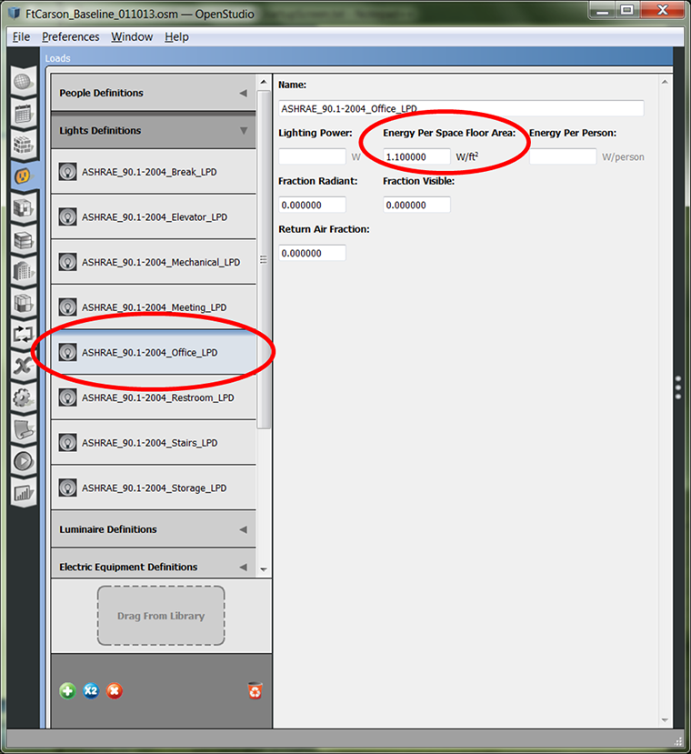
On the left side under the "Loads" tab is a category called "Lights Definitions." Under this category is the definition "ASHRAE_90.1-2004_Office_LPD" that was referenced on the "Space Types" tab. One field is titled "Energy Per Space Floor Area" with units of "W/ft2." Although the GUIs may show IP units, the methods of the OpenStudio model are all written in SI units.
The Task, in OpenStudio Terms
"Find the SpaceType called "Enclosed Office". Replace any LightsDefinitions referenced by Lights in this SpaceType with a new LightsDefinition, where "Energy Per Space Floor Area" = 10 W/m2."
Finding the OpenStudio Methods: Using the Documentation
For this example and all your measure writing work, the OpenStudio API documentation is the principal resource.
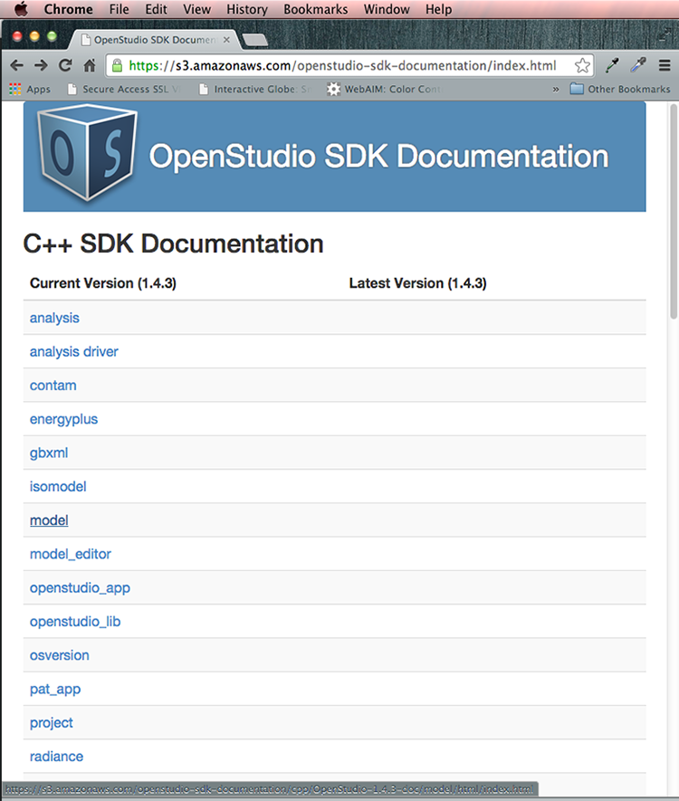
Click on the model link to explore.
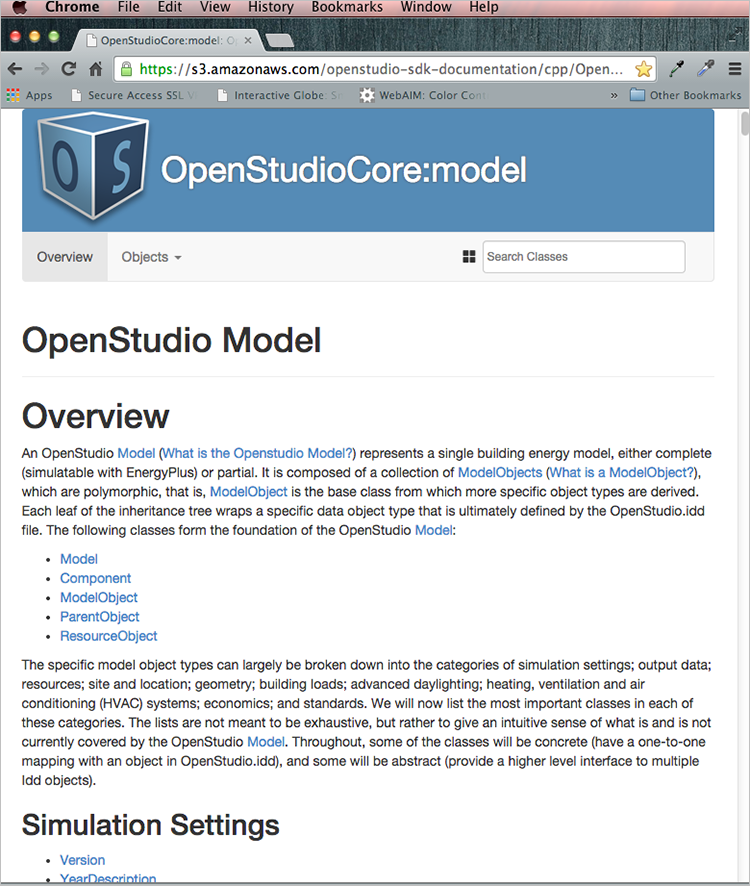
This will take you to the OpenStudio Model Overview page.
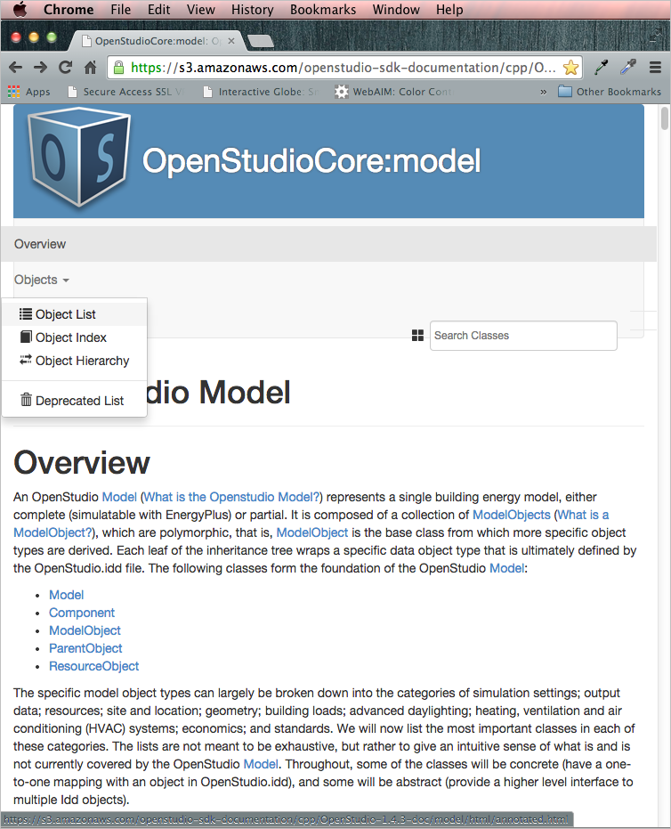
Select the "Objects/Objects List" to find more information on individual model objects. 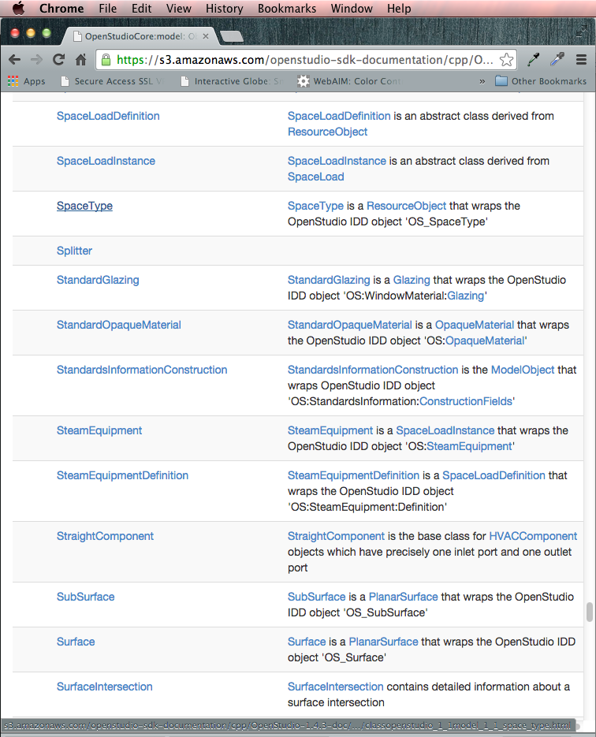
Clicking "SpaceType" takes you to the class reference for that object:
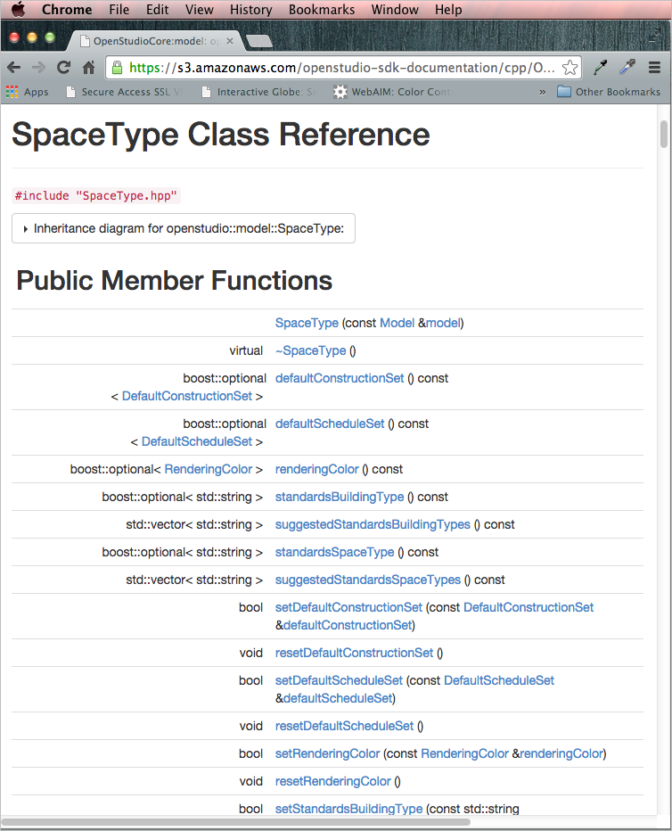
This is the documentation for the SpaceType class. The methods are generally split into four categories: Constructors and Destructors, Getters, Setters, and Other. SpaceType is a base class of ResourceObject. You can look into the ResourceObject for additional methods beyond what is in the SpaceType documentation.
Understanding the Methods
At first glance, the methods look cryptic, not at all like those shown in the examples, because this is the C++ documentation and the methods used are the Ruby translation of these same methods. These methods can be decoded as follows:
The name of the method:

The method names are generally descriptive enough that it is possible to understand what they do without any other information. Here is how the method would be used in Ruby:
design_spec_oa = space_type.designSpecificationOutdoorAir
The type of object returned by the method:

Method Return Types:
- bool = true/false
- double = a number
- std::string = text
- void = does not return anything
- std::vector<> = vector of the type objects inside the carets (<>)
- boost::optional<> = an "optional"; may either be empty or point to an actual object of the type inside the <>
The written description of the method:
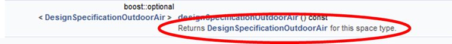
The inputs needed by the method:
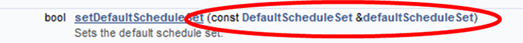
The Missing Methods
There are a variety of crucial Ruby methods missing from the C++ SDK documentation. This can be very confusing to new OpenStudio Measure writers. However, these missing methods follow a few simple patterns that begin to make sense after a little while. OpenStudio uses a program called SWIG to convert the C++ code to Ruby for use in OpenStudio Measures. There are a few SWIG templates which are used to add Ruby methods to the OpenStudio Model and each OpenStudio ModelObject. These templates can be found in the OpenStudio source code. Interested readers can dig further into the OpenStudio SWIG files (with .i extensions) to see how they work.
There are two types of SWIG templates, one for unique ModelObjects and another for non-unique ModelObjects. Each OpenStudio Model can have only 0 or 1 unique ModelObjects of each type. Each OpenStudio Model can have 0 to many non-unique ModelObjects of each type. The unique ModelObjects are:
AirflowNetworkSimulationControlBuildingClimateZonesConvergenceLimitsExternalInterfaceFacilityHeatBalanceAlgorithmInsideSurfaceConvectionAlgorithmLifeCycleCostParametersLightingSimulationControlOutputControlReportingTolerancesOutputEnergyManagementSystemOutsideSurfaceConvectionAlgorithmRadianceParametersRunPeriodRunPeriodControlDaylightSavingTimeShadowCalculationSimulationControlSiteSizingParametersTimestepVersionWeatherFileYearDescriptionZoneAirContaminantBalanceZoneAirHeatBalanceAlgorithmZoneAirMassFlowConservationZoneCapacitanceMultiplierResearchSpecial
The objects and methods are defined for each unique ModelObject (replacing ModelObjectClass with the name of the ModelObject, e.g. Building):
- A class named
OptionalModelObjectClass, e.g.OptionalBuilding. This class derives fromboost::optionaland has the methodsis_initialized,empty?, andget. See the section "OpenStudio Measures and the boost::optional Type" for more information. - A method on
ModelObjectnamedto_ModelObjectClass, e.g.model_object.to_Building, which attempts to cast the object to the typeModelObjectClass. Returns anOptionalModelObjectClass, e.g.OptionalBuilding. - A method on
ModelnamedgetOptionalModelObjectClass, e.g.model.getOptionalBuilding, which gets the unique ModelObject of that type if it exists. Returns anOptionalModelObjectClass, e.g.OptionalBuilding. - A method on
ModelnamedgetModelObjectClass, e.g.model.getBuilding, which gets the unique ModelObject of that type if it exists, otherwise creates and returns one. Returns aModelObject, e.g.Building. Note that unique ModelObjects do not have public constructors, they are created by calling this method on the OpenStudio Model.
All non-unique ModelObjects (the majority of ModelObjects) have the following objects and methods defined (replacing ModelObjectClass with the name of the ModelObject, e.g. ThermalZone):
- A class named
OptionalModelObjectClass, e.g.OptionalThermalZone. This class derives fromboost::optionaland has the methodsis_initialized,empty?, andget. See the section "OpenStudio Measures and the boost::optional Type" for more information. - A class named
ModelObjectClassVector, e.g.ThermalZoneVector. This class derives fromstd::vectorand has the methods from the RubyEnumerablemixin. Unlike a RubyArray, only objects ofModelObjectClasscan be stored in aModelObjectClassVector. - A method on
ModelObjectnamedto_ModelObjectClass, e.g.model_object.to_ThermalZone, which attempts to cast the ModelObject to the typeModelObjectClass. Returns anOptionalModelObjectClass, e.g.OptionalThermalZone. - A method on
ModelnamedgetModelObjectClass(handle), e.g.model.getThermalZone(handle), which gets the ModelObject of that type by handle if it exists. Returns anOptionalModelObjectClass, e.g.OptionalThermalZone. - A method on
ModelnamedgetModelObjectClassByName(name), e.g.model.getThermalZoneByName(name), which gets the ModelObject of that type by name if it exists. Returns anOptionalModelObjectClass, e.g.OptionalThermalZone. - A method on
ModelnamedgetModelObjectClasss, e.g.model.getThermalZones, which gets all ModelObjects of that type. Returns aModelObjectClassVector, e.g.ThermalZoneVector. Notice the extrasthat is added automatically to this method causing some odd names, e.g.model.getLightss. - A method on
ModelnamedgetModelObjectClasssByName(name, exact_match), e.g.model.getThermalZonesByName(name, exact_match), which gets all ModelObjects of that type matchingname. Ifexact_matchis false, then partial matches are returned. Returns aModelObjectClassVector, e.g.ThermalZoneVector. Notice the extrasthat is added automatically to this method causing some odd names, e.g.model.getLightssByName(name, exact_match).
Using the Documentation for the Example Measure
With an understanding of how to read the documentation, the example measure continues.
The first step is to find the SpaceType named "Enclosed Office". Looping through all the spaces in the model, we can use the .name method to get the name of each space. Note that while .name returns an OptionalString, OpenStudio assigns names to all model objects, so there is no need to check if the name is empty before using it (a rare exception to the rule of testing all Optional types for !empty). Using the .match method, we test if the SpaceType's name matches the value we are looking for:
space_types = model.getSpaceTypes
space_types.each do |space_type|
if space_type.name.get.match("Enclosed Office")
#do something
end
end
Once found, we need to get all the Lights in Spaces of this SpaceType. The documentation for SpaceType includes a method to get a vector of all Lights in Spaces of this SpaceType:

Now, loop over all these Lights:
space_types = model.getSpaceTypes
space_types.each do |space_type|
if space_type.name.get.match("Enclosed Office")
space_type.lights.each do |light|
#do something
end
end
end
We need to make a new LightsDefinition to replace the ones these Lights currently use. The documentation for LightsDefinition shows a constructor that expects a Model as the input:
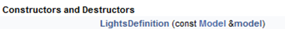
Constructors translated from C++ to Ruby generally take the following form; the only difference may be which arguments the constructor requires (usually it is simply a model).
new_thing = OpenStudio::Model::NewThingClassName.new(model)
Next, we need to set the LPD of the LightsDefinition to 10 W/m2. The LightsDefinition documentation presents a method for this:
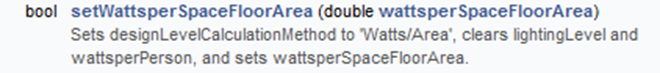
Name the new LightsDefinition object, following best practices. Most OpenStudio objects have a .setName(new_name) method, and the Lights object is no exception:
new_lights_def = OpenStudio::Model::LightsDefinition.new(model)
new_lights_def.setWattsperSpaceFloorArea(10.0)
new_lights_def.setName("10 W/m^2 Lights Definition")
Now that we have a new LightsDefinition object, we must replace the existing LightsDefinition with the new one. The Lights documentation contains a method to set the lights definition:
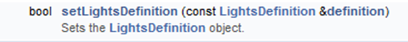
Putting this all together, we get:
new_lights_def = OpenStudio::Model::LightsDefinition.new(model)
new_lights_def.setWattsperSpaceFloorArea(10.0)
new_lights_def.setName("10 W/m^2 Lights Definition")
space_types = model.getSpaceTypes
space_types.each do |space_type|
if space_type.name.match("Enclosed Office")
lights = space_type.lights
lights.each do |light|
light.setLightsDefinition(new_lights_def)
end
end
end
Full Example
The following example is a complete measure.rb file, including all the pieces described previously. We include comments (text preceded by '#'), following Ruby best practices.
#start the measure
class ReplaceLightsInSpaceTypeWithLPD < OpenStudio::Ruleset::ModelUserScript
#define the name that a user will see
def name
return "Replace All Lights in a Given Space Type with a New LPD"
end
#define the arguments that the user will input
def arguments(model)
args = OpenStudio::Ruleset::OSArgumentVector.new
#make an argument for space type name
stn = OpenStudio::Ruleset::OSArgument::makeStringArgument('stn',true)
stn.setDisplayName('Space Type Name')
args << stn
#make an argument for LPD
lpd = OpenStudio::Ruleset::OSArgument::makeDoubleArgument('lpd',true)
lpd.setDisplayName('Lighting Power Density (W/m^2)')
lpd.setDefaultValue(1.0)
args << lpd
return args
end #end the arguments method
#define what happens when the measure is run
def run(model, runner, user_arguments)
super(model, runner, user_arguments)
#use the built-in error checking
if not runner.validateUserArguments(arguments(model), user_arguments)
return false
end
#assign the user inputs to variables
stn = runner.getStringArgumentValue('stn',user_arguments)
lpd = runner.getDoubleArgumentValue('lpd',user_arguments)
#check the LPD for reasonableness
if lpd < 0 or lpd > 100 #error on impossible values
runner.registerError("Lighting Power Density (W/m^2) must be
greater than 0 and less than 100.
You entered #{lpd}.")
return false
elsif lpd > 50 #warning on unrealistic but possible values
runner.registerWarning("A Lighting Power Density of #{lpd} W/m^2
seems a little high. Measure will continue,
but double-check this isn't a typo.")
end
#create a variable and array for tracking changes to model
num_spctyp_changed = 0
spctyp_ch_log = []
#make changes to the model
#loop through all space types in the model
model.getSpaceTypes.each do |space_type|
if space_type.name.get.match("#{stn}")
num_spctyp_changed += 1 #log change
runner.registerInfo("Space Type called #{space_type.name} matches
#{stn}.")
#loop through all lights in the space type
space_type.lights.each do |light|
#get the old lpd from the existing lights definition, if exists
old_lpd = "not per-area"
if not light.lightsDefinition.wattsperSpaceFloorArea.empty?
old_lpd = light.lightsDefinition.wattsperSpaceFloorArea.get
end
#add the old and new condition to the change log
spctyp_ch_log << [space_type.name, old_lpd]
#make a new lights definition
new_lights_def = OpenStudio::Model::LightsDefinition.new(model)
new_lights_def.setWattsperSpaceFloorArea(lpd)
new_lights_def.setName("#{lpd} W/m^2 Lights Definition")
#replace the old lights def with the new lights def
light.setLightsDefinition(new_lights_def)
end
end
end
#report out the initial and final condition to the user
initial_condition = ""
initial_condition << "There are #{num_spctyp_changed} space types
that match the name #{stn}. "
final_condition = ""
spctyp_ch_log.each do |ch|
initial_condition << "Space type #{ch[0]} had an lpd of #{ch[1]}
W/m^2. "
final_condition << "space type #{ch[0]}, "
end
final_condition << "were all set to an lpd of #{lpd} W/m^2"
runner.registerInitialCondition(initial_condition)
runner.registerFinalCondition(final_condition)
#report if the measure was Not Applicable
if num_spctyp_changed == 0
runner.registerAsNotApplicable("Not Applicable -
No space types matched #{stn}.")
end
return true
end #end the run method
end #end the measure
#boilerplate that allows the measure to be use by the application
ReplaceLightsInSpaceTypeWithLPD.new.registerWithApplication
Measure Metadata File - measure.xml
The measure.xml file contains metadata that allow the measure to be filed into an organizational structure, provide an explanation about what the measure does and how it works, and inform the GUI where in the workflow the measure can go. The GUI creates a new measure.xml file when you click on the "Create a New Measure" button. In general, you should not need to make any changes to the measure.xml file manually. The OpenStudio Application and PAT detect any changes that are made to measures in your "My Measures" directory when you press the "Sync Project Measures with Library" button. Changes to the name, description, modeler description or any other measure properties will be updated in the measure and the measure will be given a new version identifier. However, there are a few limited cases when you will need to modify the measure.xml file by hand. These cases are 1) changing the measure's author information (i.e. provenance), 2) changing the tags which determine where the measure is listed in the BCL measure taxonomy, 3) changing attributes which are used when searching for the measure on the BCL. To make changes to any of these items you will have to edit the appropriate section (described below) in the measure.xml file by hand, then press the "Sync Project Measures with Library" button in either the OpenStudio Application or PAT to assign a new version identifier. NOTE: This process of creating and updating the measure.xml file will change for PAT 2.0, and the advent of the OpenStudio Command Line Interface (CLI).
Provenance
The Provenance section describes who wrote the measure and when. As author, you may identify yourself however you desire; current convention is to use first initial of first name, followed by full last name (e.g., jdoe). You may name multiple authors. The time format follows ISO Standard 8601.
<provenances>
<provenance>
<author>aparker</author>
<datetime>2013-01-28T15:00:00Z</datetime>
</provenance>
<provenance_required>true</provenance_required>
</provenances>
Tags
The Tags section describes where the measure lives in the BCL Measure taxonomy. This taxonomy is used to indicate where in the GUI the measure should be displayed. If the Tags section is blank, the measure will not show up in the GUI. The BCL Measures Taxonomy is available here.
Attributes
The Attributes section provides additional metadata that allow the GUI to display the measure in the correct place in the workflow and show only measures that can be used by a particular tool. There are currently two attributes used for the latter: "Intended Software Tool", and "Intended Use Case". These attributes are populated when a new measure is created; if you must change these after the measure has been created you must edit the measure.xml file manually. Other attributes may be added but are not currently used by OpenStudio applications.
Intended Software Tool (deprecated)
The Intended Software Tool attribute lists the tools that this measure is intended to be used by. Software tools may choose to only display measures which list them as an intended software tool. A measure may indicate more than one tool as intended software tool. The list of software tools used by OpenStudio is:
- Apply Measure Now - measures intended to be run directly on the currently open model in the OpenStudio Application. Only Model measures may be used with the "Apply Measure Now" feature.
- OpenStudio Application - measures intended to be run as part of the simulation workflow with the OpenStudio Application.
- Parametric Analysis Tool - measures intended to be run as part of the simulation workflow in PAT.
- Analysis Spreadsheet - measures intended to be run using the OpenStudio Analysis Spreadsheet.
Intended Software Tool has been deprecated; it will be removed from the schema for PAT 2.0
Intended Use Case
The Intended Use Case attribute describes the typical use case(s) for this measure. Software tools may choose to only display measures which apply to their intended use case. A measure can list more than one intended use case. The list of use cases used by OpenStudio is:
- Model Articulation - measures which create building modeling content. Examples include a building geometry footprint generator or a measure that adds an HVAC system to a model which does not have one.
- Calibration - measures which alter an existing model for the purposes of calibration. Examples include measures which fine tune infiltration levels or adjust existing lighting power to account for uncertainty in operational schedules.
- Sensitivity Analysis - measures which alter an existing model to determine what parameters are most sensitive. Examples include a measure which makes all walls adiabatic or a measure which removes all lights from the building.
- New Construction EE - measures which are appropriate energy conservation measures for new construction applications. Examples include increased framing depth or reduced window to wall ratio.
- Retrofit EE - measures which are appropriate energy conservation measures for retrofit applications. Examples include replacing incandescent light fixtures with high efficiency T-8s or adding occupancy sensors to uncommonly used spaces.
- Automatic Report Generation - measures which report human or machine readable content. Examples include a report showing total floor area per space type or a report which plots energy use as a function of outdoor temperature.
Example xml:
<attributes>
<attribute>
<name>Intended Use Case</name>
<value>Model Articulation"</value>
<datatype>string</datatype>
</attribute>
<attribute>
<name>Intended Use Case</name>
<value>New Construction EE</value>
<datatype>string</datatype>
</attribute>
</attributes>
Measure Testing
As the measure writing community has grown, and the Building Component Library is open to all measure writers (and consumers), we believe testing should be an integral element of the measure authoring process. A continuous integration (CI) system for the OpenStudio Measures on the BCL is in development, and we are now recommending all measures submitted to the BCL include a series of functional and unit tests, for integration with the CI system.
Software testing is a means to code quality assurance and output validation, and allow the author to test their work:
- against various versions of Ruby
- against various versions of OpenStudio
- using combinations of argument values
- against a variety of permutations of input models
- for general runtime errors
- for valid IDF output (may even run EnergyPlus to confirm)
- for reporting measure output quality
Measure Test Components
The following sections discuss the elements of a typical measure test file.
Require statements
The default test that is automatically created when you make a new measure will contain the Ruby Classes and Modules necessary for all measures to function (you may include others here, that your code requires):
require 'openstudio'
require 'openstudio/ruleset/ShowRunnerOutput'
require 'minitest/autorun'
require_relative '../measure.rb'
require 'fileutils'
Class - MiniTest::Unit::TestCase
The test class name shall take the form "[YourMeasureName]Test". All of measure test code excluding the require statements will be contained within this class. Following this guidance, a test class for a measure named "My Measure" would be initialized:
class MyMeasureTest < MiniTest::Unit::TestCase
Setup and Teardown
The Setup and Teardown methods are inherent to the Ruby unit test framework, and we include the empty, disabled (commented-out) definitions in all auto-generated measure tests:
# def setup
# end
# def teardown
# end
These methods are useful for reliably creating an environment suitable for the ensuing test (e.g. setting paths; creating environment variables, data), and for restoring the system to its initial state. For additional details on the setup and teardown methods refer to the MiniTest documentation, and refer to the example setup and teardown methods from an actual OpenStudio measure, below:
# create test files if they do not exist
def setup
if File.exist?(reportPath())
FileUtils.rm(reportPath())
end
assert(File.exist?(modelPath()))
assert(File.exist?(runDir()))
if not File.exist?(sqlPath())
puts "Running EnergyPlus"
co = OpenStudio::Runmanager::ConfigOptions.new(true)
co.findTools(false, true, false, true)
wf = OpenStudio::Runmanager::Workflow.new("modeltoidf->energypluspreprocess->energyplus")
wf.add(co.getTools())
job = wf.create(OpenStudio::Path.new(runDir()), OpenStudio::Path.new(modelPath()))
rm = OpenStudio::Runmanager::RunManager.new
rm.enqueue(job, true)
rm.waitForFinished
end
end
# delete output files
def teardown
# comment this out if you don't want to rerun EnergyPlus each time
if File.exist?(sqlPath())
#FileUtils.rm(sqlPath())
end
# comment this out if you want to see the resulting report
if File.exist?(reportPath())
#FileUtils.rm(reportPath())
end
end
Test Definition(s)
You may have as many individual tests in your test file as needed to ensure the quality of your work:
def test_my_measure_good_argument_values_test
Example Tests
- Test the number and name(s) of measure arguments
- Test for incorrect or invalid argument values; the measure should fail gracefully with a meaningful error message to the user.
- Test a modeling result, e.g. source energy use, to remain within a specific range.
Create Measure Instance and Runner
This will look pretty much the same for all measures and tests. The main change will be updating the class of the measure. Refer to the measure.rb that goes with the test to confirm it is correct.
# create an instance of the measure
measure = MyMeasure.new
# create an instance of a runner
runner = OpenStudio::Ruleset::OSRunner.new
Model and Workspace Creation, Loading
Every measure needs a model or workspace (and results, in the case of a reporting measure) upon which to (inter)act. Measures can create source OSMs (and IDFs), or load existing ones.
Create New Model
The OpenStudio Model Class provides a method (.new)to create an empty model (.OSM):
# make an empty model
model = OpenStudio::Model::Model.new
Load Existing Model
The code below shows how to load an existing model. This is useful when the author wishes to test some specific model objects or configuration; a pre-existing model may be included in the resources of a given test. Note in this example, we use assert to test if the model exists (i.e., the load was successful), prior to using the get method on it.
# load the test model
translator = OpenStudio::OSVersion::VersionTranslator.new
path = OpenStudio::Path.new(File.dirname(__FILE__) + "/my_test_model_test_input.osm")
model = translator.loadModel(path)
assert((not model.empty?))
model = model.get
Create New Workspace, Blank IDF
# make an empty workspace
workspace = OpenStudio::Workspace.new("Draft".to_StrictnessLevel, "EnergyPlus".to_IddFileType)
Load Existing IDF
# load an IDF
path = OpenStudio::Path.new(File.dirname(__FILE__) + "/my_test_input.idf")
workspace = OpenStudio::Workspace.load(path)
assert((not workspace.empty?))
workspace = workspace.get
Load IDF from OSM i.e., load an OSM and forward translate it to IDF:
# load the test model
translator = OpenStudio::OSVersion::VersionTranslator.new
path = OpenStudio::Path.new(File.dirname(__FILE__) + "/my_test_model_test_input.osm")
model = translator.loadModel(path)
assert((not model.empty?))
model = model.get
# forward translate OSM file to IDF file
ft = OpenStudio::EnergyPlus::ForwardTranslator.new
workspace = ft.translateModel(model)
To see what is loaded for reporting measure, refer to the code template that comes with a new reporting measure.
Testing Argument Values
A fairly common test topic is the measure's arguments, as previously mentioned. Here we demonstrate how to accomplish this. We need to "get" the measure arguments, and then apply logical tests to them for validity.
Get the arguments:
# get arguments
arguments = measure.arguments(model)
argument_map = OpenStudio::Ruleset.convertOSArgumentVectorToMap(arguments)
Note: In the case of a model measure, we pass model to the .arguments method; for an EnergyPlus measure we pass in the workspace. The reporting measure does not require an argument here.
Let us test (assert) for the expected number of arguments (one (1) in this example), and the argument name at a specific index location:
assert_equal(1, arguments.size)
assert_equal("space_name", arguments[0].name)
Measure tests will often need to supply user argument values. Indeed, certain tests will specifically be testing for good and/or bad input, as mentioned. Here, we create a hash and populate it with the user arguments and their values:
# create hash of argument values
args_hash = {}
args_hash["space_name"] = "New Space"
args_hash["some_integer_we_need"] = 10
args_hash["some_double_we_need"] = 10.0
args_hash["a_bool_argument"] = true
After the hash has been created, then loop through the arguments to apply the hash values to the arguments. Typically the size of the hash will match the size of the arguments.
# populate argument with specified hash value if specified
arguments.each do |arg|
temp_arg_var = arg.clone
if args_hash[arg.name]
assert(temp_arg_var.setValue(args_hash[arg.name]))
end
argument_map[arg.name] = temp_arg_var
end
Run the Measure
Here, we run the OpenStudio measure from the test.
Note: (For EnergyPlus measures, replace model with workspace; reporting measures do not require a model argument at all, just runner and argument_map are passed to the method.)
measure.run(model, runner, argument_map)
result = runner.result
Show Log Messages
You may print log messages to the console:
show_output(result)
This will report the same feedback to the console that users in the GUI would see in the OpenStudio application, or PAT. Placing this directive ahead of any asserts will provide feedback if an assert fails, aiding in assert failure diagnostics (see below).
Assertions
Assertions are the primary means for testing with the Ruby unit test class. Below are some example assertions in the context of OpenStudio measures.
At a minimum a measure test suite should a test for result state. Valid options are "Success", "Fail", or "NA":
assert_equal("Success", result.value.valueName)
Authors may test for the expected number of info, or warning messages:
assert(result.info.size == 1)
assert(result.warnings.size == 0)
Here is a model-specific example that inspects the model to see that it was altered as expected:
# check output model has one added space, where
# 'num_spaces_seed' equals the initial space count from the input model
assert_equal(1, model.getSpaces.size - num_spaces_seed)
Saving Output Models
Saving the measure output model is not required, but can be useful for debugging the measure workflow itself, either during the initial authoring, or later feature expansion of a given measure.
The example below will save the output model in a subdirectory of the test directory tree. This "test" directory should be excluded from version control so that it is not distributed with the measure and tests.
#save the model to test output directory
output_file_path = OpenStudio::Path.new(File.dirname(__FILE__) + "/output/my_test_model_test_a_output.osm")
model.save(output_file_path,true)
Putting It All Together - A Complete Measure Test File
require 'openstudio'
require 'openstudio/ruleset/ShowRunnerOutput'
require 'minitest/autorun'
require_relative '../measure.rb'
require 'fileutils'
class NewMeasureTest < MiniTest::Unit::TestCase
# def setup
# end
# def teardown
# end
def test_number_of_arguments_and_argument_names
# create an instance of the measure
measure = NewMeasure.new
# make an empty model
model = OpenStudio::Model::Model.new
# get arguments and test that they are what we are expecting
arguments = measure.arguments(model)
assert_equal(4, arguments.size)
assert_equal("space_name", arguments[0].name)
end
def test_bad_argument_values
# create an instance of the measure
measure = NewMeasure.new
# create an instance of a runner
runner = OpenStudio::Ruleset::OSRunner.new
# make an empty model
model = OpenStudio::Model::Model.new
# get arguments
arguments = measure.arguments(model)
argument_map = OpenStudio::Ruleset.convertOSArgumentVectorToMap(arguments)
# create hash of argument values
args_hash = {}
args_hash["space_name"] = ""
args_hash["some_integer_we_need"] = 10
args_hash["some_double_we_need"] = 10.0
args_hash["a_bool_argument"] = true
# populate argument with specified hash value if specified
arguments.each do |arg|
temp_arg_var = arg.clone
if args_hash[arg.name]
assert(temp_arg_var.setValue(args_hash[arg.name]))
end
argument_map[arg.name] = temp_arg_var
end
# run the measure
measure.run(model, runner, argument_map)
result = runner.result
# show the output
show_output(result)
# assert that it ran correctly
assert_equal("Fail", result.value.valueName)
end
def test_good_argument_values
# create an instance of the measure
measure = NewMeasure.new
# create an instance of a runner
runner = OpenStudio::Ruleset::OSRunner.new
# load the test model
translator = OpenStudio::OSVersion::VersionTranslator.new
path = OpenStudio::Path.new(File.dirname(__FILE__) + "/my_test_model_test_input.osm")
model = translator.loadModel(path)
assert((not model.empty?))
model = model.get
# store the number of spaces in the seed model
num_spaces_seed = model.getSpaces.size
# get arguments
arguments = measure.arguments(model)
argument_map = OpenStudio::Ruleset.convertOSArgumentVectorToMap(arguments)
# create hash of argument values.
# If the argument has a default that you want to use, you don't need it in the hash
args_hash = {}
args_hash["space_name"] = "New Space"
# using defaults values from measure.rb for other arguments
# populate argument with specified hash value if specified
arguments.each do |arg|
temp_arg_var = arg.clone
if args_hash[arg.name]
assert(temp_arg_var.setValue(args_hash[arg.name]))
end
argument_map[arg.name] = temp_arg_var
end
# run the measure
measure.run(model, runner, argument_map)
result = runner.result
# show the output
show_output(result)
# assert that it ran correctly
assert_equal("Success", result.value.valueName)
assert(result.info.size == 1)
assert(result.warnings.size == 0)
# check that there is now 1 space
assert_equal(1, model.getSpaces.size - num_spaces_seed)
# save the model to test output directory
output_file_path = OpenStudio::Path.new(File.dirname(__FILE__) + "/output/my_test_model_test_a_output.osm")
model.save(output_file_path,true)
end
end
Running Tests
System Configuration
MacOS/Linux Generally speaking, no additional configuration is required for MacOS and Linux operating systems; Ruby is usually already installed, and if OpenStudio is installed, Ruby is configured to locate it.
Windows The system's Ruby environment variables must be configured to either:
- point to the version of ruby that OpenStudio installed, or, if there is another version or ruby installed on the system:
- point that version of Ruby to OpenStudio
In either case, typing "environment variables" in the Windows Start Menu search field will present options to change the environment variables for your account; follow the screenshots below.
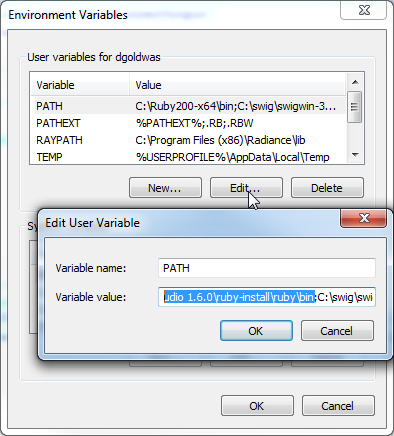
Add the following path to the system PATH variable. Specific path will vary based on OpenStudio version, as 32-bit and 64-bit versions of OpenStudio are also installed to different "Program Files" directory roots.
C:\Program Files\OpenStudio [version]\ruby-install\ruby\bin
Authors wishing to use an existing Ruby installation must add an openstudio.rb file in lib\ruby\site_ruby, with a path reference to the preferred of OpenStudio. Ruby 2.0.x is required.
require 'C:\Program Files\OpenStudio 1.7.0\Ruby\openstudio.rb'
Test Environments
Command Line Interface (CLI)
Simply call Ruby with [your_test].rb as the input:
ruby my_measure_test.rb

IDE/Text Editor
You may wish to execute your tests directly from your programming working environment, be that an Integrated Development Environment (IDE) or the text editor of your choice. By way of example, we include instructions on how to set up the popular Windows text editor Notepad++ to execute your tests:
- Install the NppExec plugin, using the plugin manager within NotePad++:
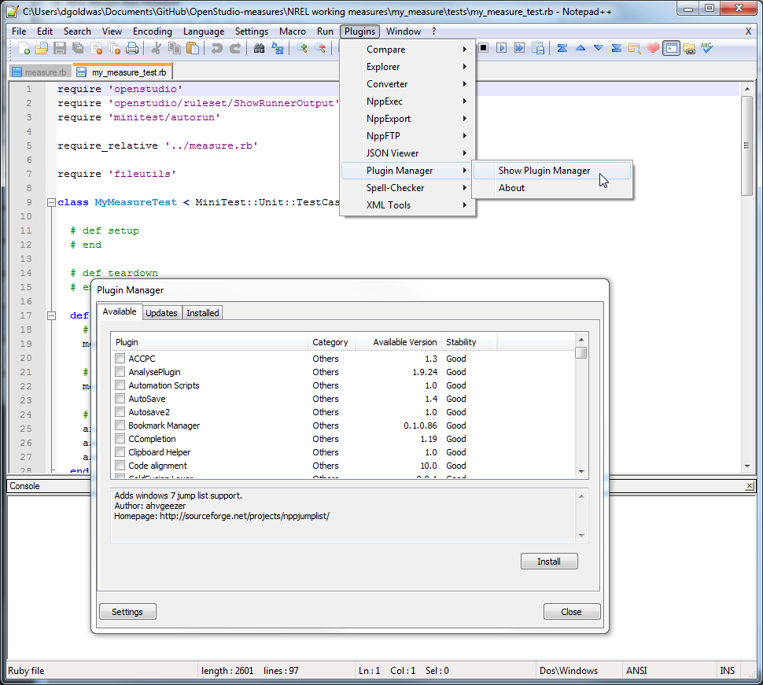
- Return to the Plugins menu, and select "Execute"; ensure "Follow $(CURRENT_DIRECTORY)" is checked:
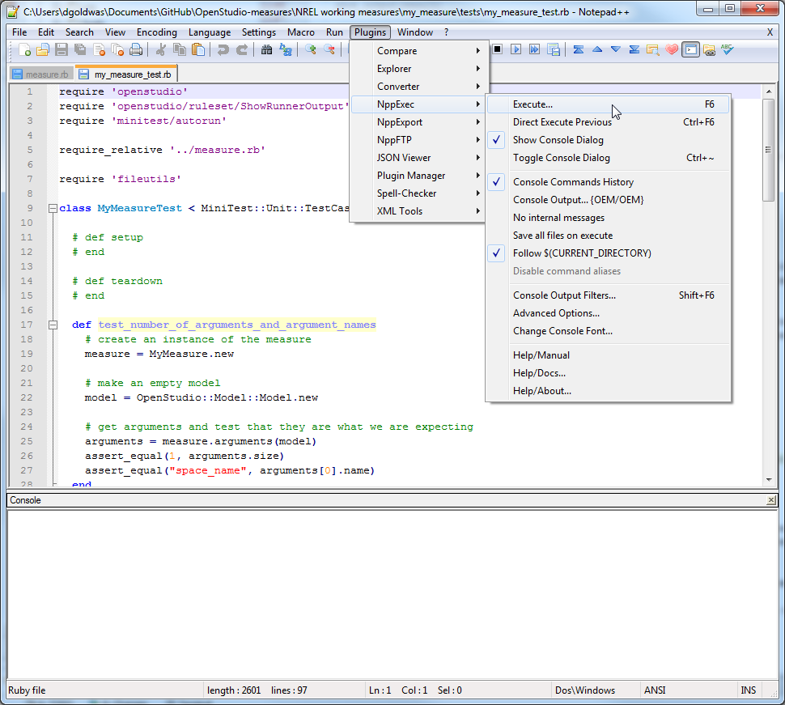
After you click "Execute" you will see a dialog. If you don't already see the following text in the command window, type it in.
ruby "$(FULL_CURRENT_PATH)"
The bottom of the screenshot shows the measure output. We see the log messages, and the number of tests run and assertions. Note that puts statements visible here, but they are not visible when the measure is run from the OpenStudio GUIs. Use runner.Register[Info|Warning|Error] directives for those, as explained elsewhere.
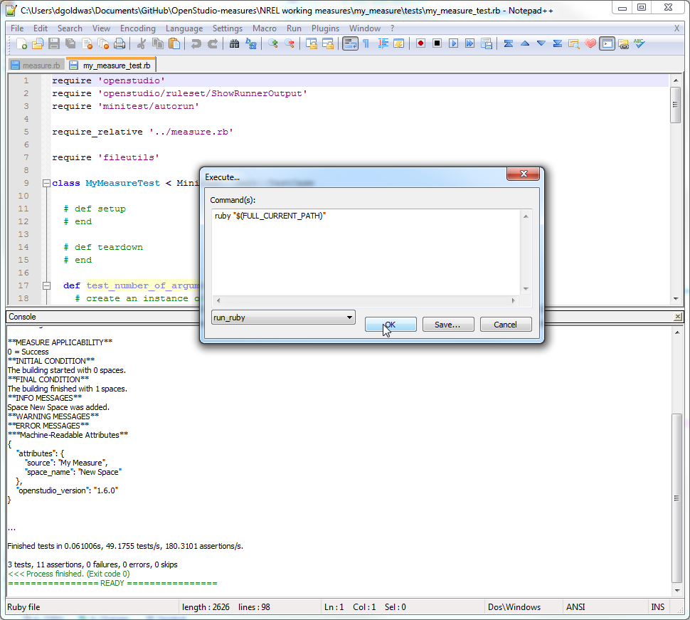
Automated testing
NREL is in the process of developing an automated testing and continuous integration (CI) framework for the OpenStudio Measures contained on the BCL, and will include details on how to integrate your own measures with this test framework, here.
Advanced Topics
EnergyPlus Measures
Measures typically operate on an OpenStudio model, via the OpenStudio Model API, thus granting measure authors access to the entirety of the OpenStudio Model. However, as the OpenStudio model does not yet include the entirety of the EnergyPlus Data Model, we offer the EnergyPlus Measure as a means to access the full EnergyPlus IDD.
EnergyPlus measures give measure authors the ability to continue a programmatic modeling workflow throughout the BEM process, but EnergyPlus measures operate on an IDF; as such, they are intended to be run after the OSM has been translated from OpenStudio to EnergyPlus.
Below are some specific code differences between EnergyPlus measures and OpenStudio measures:
Classes must reference Workspace versus Model, as shown in the following examples:
Initialization:
class ConstructionTakeOff < OpenStudio::Ruleset::WorkspaceUserScript
Method arguments:
def arguments(workspace)
def run(workspace, runner, user_arguments)
super(workspace, runner, user_arguments)
The EnergyPlus IDD API is simpler than the OpenStudio Model API; it allows for changing .idf fields directly, getting all objects of a certain type, etc. This functionality is under the utilities project in the classes Workspace and WorkspaceObject.
Finding and Inspecting EnergyPlus Objects
The following example shows how to find and loop through EnergyPlus objects. We locate objects in an EnergyPlus Workspace by IDD type (e.g., BuildingSurface:Detailed). These types can be found in the EnergyPlus documentation shown in Section 5.4. The IDF model is not an object model. As a result, instead of requesting a name we access specific fields by index in the IDD (0-based), e.g. .getString(2):
# get all surfaces and constructions in model
heat_transfer_surfaces = workspace.getObjectsByType("BuildingSurface:Detailed".to_IddObjectType)
#the line below won't get other objects such as Construction:InternalSource.
constructions = workspace.getObjectsByType("Construction".to_IddObjectType)
# report initial condition
runner.registerInitialCondition("The model has #{constructions.size} construction objects.")
# array for constructions that are used on a heat transfer surface
used_constructions_names = [] #just holds names
# get names of constructions used in the model
heat_transfer_surfaces.each do |heat_transfer_surface|
construction = heat_transfer_surface.getString(2).to_s #(0) is name, (1) is Surface Type, etc.
used_constructions_names << construction
end
Adding EnergyPlus Workspace Objects
The following example shows how to insert a new EnergyPlus object into the Workspace. A string is created, using Ruby's string substitution mechanisms to set variable values, and then the string is turned into IdfObject and finally added to the Workspace.
# array to hold new IDF objects
string_objects = []
# create sorted (.sort) list of unique (.uniq) constructions from all
# constructions in model, adding ComponentCost:LineItem for each
used_constructions_names.sort.uniq.each do |used_construction_name|
#IDF object text for ComponentCost:LineItem
string_objects << "
ComponentCost:LineItem,
#{used_construction_name}_TakeOff, !- Name
, !- Type
Construction, !- Line Item Type
#{used_construction_name}, !- Item Name
, !- Object End Use Key
, !- Cost per Each {$}
0.000000000001; !- Cost per Area {$/m2}
"
end
# add all of the strings to workspace to create IDF objects
string_objects.each do |string_object|
idfObject = OpenStudio::IdfObject::load(string_object)
object = idfObject.get
wsObject = workspace.addObject(object)
end
Editing EnergyPlus Workspace Objects
The following example shows how to access and edit EnergyPlus objects in the Workspace.
# get OutputControl:Table:Style object that was generated in forward translation from OSM to IDF
table_style = workspace.getObjectsByType("OutputControl:Table:Style".to_IddObjectType)
# even though there is just a single object, it is still in an array
if not table_style.empty?
# we can access the first object in the array using table_style[0]
if table_units == "Inch-Pound"
#use setString to change the field value to request IP units
table_style_ip = table_style[0].setString(1,"InchPound")
else
#will result in SI units in tables
table_style_si = table_style[0].setString(1,"")
end
end
Complete EnergyPlus Measure Example
The following script creates a ComponentCost:LineItem object for each construction used in the model.
#start the measure
class ConstructionTakeOff < OpenStudio::Ruleset::WorkspaceUserScript
#define the name that a user will see
def name
return "Create Envelope Quantity TakeOff"
end
#define the arguments that the user will input
def arguments(workspace)
args = []
#make an argument for table units
chs = OpenStudio::StringVector.new
chs << "Inch-Pound"
chs << "SI Units"
table_units = OpenStudio::Ruleset::OSArgument::makeChoiceArgument("table_units",chs)
table_units.setDisplayName("Choose Units for EnergyPlus Output HTML")
table_units.setDefaultValue("Inch-Pound")
args << table_units
return args
end #end the arguments method
#define what happens when the measure is run
def run(workspace, runner, user_arguments)
super(workspace, runner, user_arguments)
#assign the user inputs to variables
table_units = runner.getStringArgumentValue("table_units",user_arguments)
#get all surfaces and constructions in model
heat_transfer_surfaces = workspace.getObjectsByType("BuildingSurface:Detailed".to_IddObjectType)
#the line below won't get other objects such as Construction:InternalSource.
constructions = workspace.getObjectsByType("Construction".to_IddObjectType)
#report initial condition
runner.registerInitialCondition("The model has #{constructions.size} construction objects.")
#array for constructions that are used on a heat transfer surface
used_constructions_names = [] #just holds names
#get names of constructions used in the model
heat_transfer_surfaces.each do |heat_transfer_surface|
construction = heat_transfer_surface.getString(2).to_s #(0) is name, (1) is Surface Type, etc.
used_constructions_names << construction
end
#report as not applicable if there are no constructions in the model used on surfaces.
if used_constructions_names.empty?
runner.registerAsNotApplicable("There are not any constructions in the model that are associated with surfaces.")
end
#array to hold new IDF objects
string_objects = []
# create sorted (.sort) list of unique (.uniq) constructions from all
# constructions in model, adding ComponentCost:LineItem for each
#IDF object text for ComponentCost:LineItem
string_objects << "
ComponentCost:LineItem,
#{used_construction_name}_TakeOff, !- Name
, !- Type
Construction, !- Line Item Type
#{used_construction_name}, !- Item Name
, !- Object End Use Key
, !- Cost per Each {$}
0.000000000001; !- Cost per Area {$/m2}
"
end
# add all of the strings to workspace to create IDF objects
string_objects.each do |string_object|
idfObject = OpenStudio::IdfObject::load(string_object)
object = idfObject.get
wsObject = workspace.addObject(object)
end
# report final condition about objects added to the model
runner.registerFinalCondition("ComponentCost:LineItem objects were added for the {used_constructions_names.uniq.size} constructions that are used in the model.")
# if IP units requested add OutputControl:Table:Style object
table_style = workspace.getObjectsByType("OutputControl:Table:Style".to_IddObjectType)
# even though there is just a single object, it is still in an array
if not table_style.empty?
# we can access the first object in the array using table_style[0]
if table_units == "Inch-Pound"
#use setString to change the field value to request IP units
table_style_ip = table_style[0].setString(1,"InchPound")
else
#will result in SI units in tables
table_style_si = table_style[0].setString(1,"")
end
end
end #end the run method
end #end the measure
# this allows the measure to be used by the application
ConstructionTakeOff.new.registerWithApplication
EnergyPlus Object Documentation
The "InputOutputReference.pdf" document that ships with EnergyPlus describes every EnergyPlus object. Below is a segment of the documentation for the ComponentCost:LineItem object. It describes which fields are required versus optional, and what kinds of data are expected for each field. EnergyPlus also ships with example models that illustrate the proper use of each object in a model. A spreadsheet documenting the examples is located in the EnergyPlus/examples directory of your installation.

Reporting Measures
A Reporting Measure is used for reading and reporting on output data from an OpenStudio simulation. This includes Model input as well as EnergyPlus output data. These measures are typically run after the EnergyPlus simulation for obvious reasons. Reporting Measures can extract machine readable attributes for a large automated analysis, and may produce interactive, HTML-based reports that include plots and charts.
EnergyPlus Output Requests
A special method, available for reporting measures only, allows reporting measures to request EnergyPlus output variables required by the run method. This method accepts the runner and user arguments, returning a vector of IdfObjects that request the required outputs, these objects will be added to the .idf before simulation. A subset of IdfObject types may be requested by this method, and are listed here:
- Output:Surfaces:List
- Output:Surfaces:Drawing
- Output:Schedules
- Output:Constructions
- Output:Table:TimeBins
- Output:Table:Monthly
- Output:Variable
- Output:Meter
- Output:Meter:MeterFileOnly
- Output:Meter:Cumulative
- Output:Meter:Cumulative:MeterFileOnly
- Meter:Custom
- Meter:CustomDecrement
- Output:Table:SummaryReports (unique object)
Duplicate requests are ignored; in the case of unique objects, the requests are merged with requests in the existing model:
def energyPlusOutputRequests(runner, user_arguments)
super(runner, user_arguments)
result = OpenStudio::IdfObjectVector.new
# use the built-in error checking
if !runner.validateUserArguments(arguments(), user_arguments)
return result
end
result << OpenStudio::IdfObject.load("Output:Variable,,Site Outdoor Air Drybulb Temperature,Timestep;").get
result << OpenStudio::IdfObject.load("Output:Variable,,Site Outdoor Air Humidity Ratio,Timestep;").get
result << OpenStudio::IdfObject.load("Output:Variable,,Site Outdoor Air Relative Humidity,Timestep;").get
result << OpenStudio::IdfObject.load("Output:Variable,,Zone Air Temperature,Timestep;").get
result << OpenStudio::IdfObject.load("Output:Variable,,Zone Air Humidity Ratio,Timestep;").get
result << OpenStudio::IdfObject.load("Output:Variable,,Zone Air Relative Humidity,Timestep;").get
return result
end
Reporting Measure Run Method
As mentioned, Reporting Measures are run after the simulation is complete. However, access to the last model or workspace is very useful for extracting information about the simulation. For this reason, Reporting Measures allow access to a read only copy of the last OpenStudio Model generated in the simulation workflow as well as the last EnergyPlus Workspace simulated by EnergyPlus. Additionally, the EnergyPlus SqlFile containing tabular and timeseries simulation results is available along with the EpwFile (weather file) that was used in the simulation. These objects may be accessed from the runner as shown below:
# define what happens when the measure is run
def run(runner, user_arguments)
super(runner, user_arguments)
# use the built-in error checking
if !runner.validateUserArguments(arguments(), user_arguments)
return false
end
model = runner.lastOpenStudioModel
if model.empty?
runner.registerError("Cannot find last model.")
return false
end
model = model.get
workspace = runner.lastEnergyPlusWorkspace
if workspace.empty?
runner.registerError("Cannot find last workspace.")
return false
end
workspace = workspace.get
sqlFile = runner.lastEnergyPlusSqlFile
if sqlFile.empty?
runner.registerError("Cannot find last sql file.")
return false
end
sqlFile = sqlFile.get
epwFile = runner.lastEpwFile
if epwFile.empty?
runner.registerError("Cannot find last epw file.")
return false
end
epwFile = epwFile.get
Output Attributes
We have seen how to send log messages from measures, which are useful for providing general and debugging information to the user in the OpenStudio app, PAT, and at the command line. However, there is also a need to output machine readable attributes that can be used to create reports about design alternatives in parametric studies. These attributes are associated with the measure that generated them in the workflow. The registerValue method is used to register these key-value pairs:
# runner.registerValue(key,value,units)
runner.registerValue("total_life_cycle_cost", total_life_cycle_cost, "$")
The key and units parameters must be strings; the value passed to registerValue may be a double, bool, integer, string, or nil object. The output attribute key should contain lowercase alphanumeric characters with underscores where you would typically have a space (snake_case). The attribute key should not start with a number. Additionally the following characters shall not be used in output attribute key names:
| ! @ # $ % ^ & * ( ) { } \ [ ] ; : ' " , < . > \ / ? + =
By default, all measure arguments are automatically output in machine readable format. For example, if a measure takes an argument named 'rotation':
relative_building_rotation = OpenStudio::Ruleset::OSArgument.makeDoubleArgument('rotation', true)
An attribute named 'rotation' will automatically be added to the measure's output, with the value passed in by the user. Measure writers may output any attributes they wish. If a measure outputs multiple attributes with the same name, preceding definitions are clobbered (i.e. the last attribute reported by that name will be preserved). Measure writers are encouraged to use terms that are present in the BCL taxonomy (and the upcoming DEnCity API) to allow applications to understand attribute names. Additionally, special modifiers can be added to attribute names which will imply additional relationships between attributes. These special attribute modifiers are documented below, using the rotation attribute:
| Modifier | Example | Meaning |
|---|---|---|
| *_initial | rotation_initial | The value of 'rotation' in the initial model before the measure was run. |
| *_final | rotation_final | The value of 'rotation' in the final model after the measure was run. |
| This should be reported even if the measure returns false or NA. |
Measure Internationalization
This section describes how to use the new measure internationalization features of OpenStudio 2.0.0. The new functionality allows measure developers to build in support for multiple languages and multiple unit systems. Existing measures will continue to work without any modification. Measure developers who don't want 'internationalized' measures can continue to write them as described in the "Writing Measures" section earlier on this page.
Runner Enhancements
New Runner methods in OpenStudio 2.0.0 pass a an optional user specified language and an optional user specified unit type into the measure. If an interface using OpenStudio doesn't support this, then 'nil' will be passed in for both methods. Both methods take a string value used by methods in the measure. There should always be a default catchall language and unit system to use if a language or unit system is requested that the measure doesn't handle. For example if the measure is written to support "English" and "French", but "Spanish" is passed in, the measure should still run successfully, but will fall back to English.
Below are examples of these two methods in use.
# returns a string such as "fr"
language_preference = runner.languagePreference
# returns a string such as "SI"
units_preference = runner.unitsPreference
Name, Description, and Modeler Description Enhancements
Prior to OpenStudio 2.0 the name, description, and modeler description methods each returned a string. OpenStudio 2.0 adds support for a hash to be returned, where the key defines the language and the value a string. To support the new functionality, the runner is now passed into these methods. The description method is unique in that a modeler can alter it. The language of the altered description won't be tracked.
Below is an example of the name method. The same approach would be followed for description and modeler description.
# human readable name (is this good time to change method to display_name?)
def name (runner)
display_name_hash = {}
display_name_hash[:en] = "Set Insulation Thickness To User Specified Value."
display_name_hash[:fr] = "Réglez l'épaisseur d'isolation Pour l'utilisateur spécifié Valeur."
display_name_hash[:es] = "Establecer el grosor del aislamiento a un valor específico del usuario."
return display_name_hash
endArguments Method Enhancements
Methods to set an argument's display name, default, and description have been enhanced to accept the an input for preferred language. Methods to set an argument's default value and units have been enhanced to accept an input for for the preferred unit system. Arguments that don't take a double, integer, or take an argument that is unitless, don't have to address unit preference.
Below is an example arguments method that supports English, French, and Spanish as languages, and SI and IP units.
# define the arguments that the user will input
def arguments (model,runner)
args = OpenStudio::Ruleset::OSArgumentVector.new
# get internationalization preferences
language_preference = runner.languagePreference
units_preference = runner.unitsPreference # not currently used here, does GUI handle this?
# make an argument
insl_thckn = OpenStudio::Ruleset::makeDoubleArgument('insl_thckn',true)
# set langauge specific argument display name
display_name_hash = {}
display_name_hash[:en] = 'Insulation Thickness'
display_name_hash[:fr] = 'Épaisseur d\'isolation'
display_name_hash[:es] = 'Espesor de aislamiento'
# args for setDisplayName (string hash, unit pref from GUI, fallback language)
insl_thckn.setDisplayName(display_name_hash,units_preference,'en')
# set langauge specific argument description
display_description_hash = {}
display_description_hash[:en] = 'Enter the resulting thickness for the insulation material, not a delta from the starting thickness.'
display_description_hash[:fr] = 'Entrer l\'épaisseur résultante du matériau d\'isolation et non pas un delta de l\'épaisseur de départ.'
display_description_hash[:es] = 'Introduzca el espesor resultante para el material de aislamiento , no un delta a partir del espesor de partida.'
# args for setDescription (string hash, unit pref from GUI, fallback language)
insl_thckn.setDescription(display_description_hash,units_preference,'en')
# set units for argument
# if units_preference is "IP" then GUI should show 1.5 (in)
# if units_preference is "SI" then GUI shoudl show 0.0381 (m)
# if GUI is in IP and user types 6 (in) the stored value in OSW will be 0.1524 (m)
insl_thckn.setUnits("m")
insl_thckn.setUnitsIp("in") # optional, set if don't want to use default mapping
insl_thckn.setDefaultValue(0.0381) # tied to setUnits, assumed to be SI value
# add to vector of arguments
args << insl_thckn
return args
end # end the arguments methodRun Method Enhancements
The value and units for arguments can be retrieved in the run section. Generally units should stay in SI, unless a log message or register value needs IP. In that case, conversion should be done just for the message(s).
Below is an example run method that manipulates and reports values related to a user argument
# define what happens when the measure is run
def run(model, runner, user_arguments)
super(model, runner, user_arguments)
# use the built-in error checking
if !runner.validateUserArguments(arguments(model), user_arguments)
return false
end
# assign the user inputs to variables
insl_thckn_si = runner.getDoubleArgumentValue("insl_thckn", user_arguments)
insl_thckn_units_si = runner.getDoubleArgumentUnits("insl_thckn", user_arguments) # runner.getDoubleArgumentsUnits isn't currently a valid method
insl_thckn_units_ip = runner.getDoubleArgumentUnitsIp("insl_thckn", user_arguments) # runner.getDoubleArgumentsUnitsIp isn't currently a valid method
# get internationalization preferences
language_preference = runner.languagePreference
units_preference = runner.unitsPreference # needed here since the measure, not GUI will control log messages
# change the model (didn't show code where 'some_material' is found in the model)
some_material.setThickness(insl_thckn_si)
# get display value and units for thickness
if units_preference == "SI"
thickness_value_pref_units = some_material.thickness # if insl_thckn_units_si isn't same as unit for that field still need to convert e.g. OpenStudio::convert(value,'m',cm')
thickness_display_units = insl_thckn_units_si
num_decimals = 2 # bettter to specify significant digits in message vs unit specific rounding values?
else
thickness_value_pref_units = OpenStudio::convert(some_material.thickness,insl_thckn_units_si,insl_thckn_units_ip).get
thickness_display_units = insl_thckn_units_ip
num_decimals = 1
end
# report back the user the thickness from the material
case language_preference
when 'fr'
runner.registerInfo("L'épaisseur résultante de #{some_material.name} était de #{thickness_value_pref_units.round(num_decimals)} (#{thickness_display_units).")
when 'es'
runner.registerInfo("El espesor resultante de #{some_material.name} fue #{thickness_value_pref_units.round(num_decimals)} (#{thickness_display_units).")
else
runner.registerInfo("The Resulting thickness of #{some_material.name} was #{thickness_value_pref_units.round(num_decimals)} (#{thickness_display_units).")
end
# Similar approach as above would be used on initial condition, final condition, warning, error messages. runner.registerValue is a little different
# register value
# note that the first argmuent 'name' doesn't chagne by language, but the second argument 'displayName' does
# also note that registerValue isn't rounded like registerInfo and other messages are
case language_preference
when 'fr'
runner.registerValue('some_material_thickness',"Essai Epaisseur du matériau",thickness_value_pref_units,thickness_display_units)
when 'es'
runner.registerValue('some_material_thickness',"Material de Ensayo Espesor",thickness_value_pref_units,thickness_display_units)
else
runner.registerValue('some_material_thickness',"Test Material Thickness",thickness_value_pref_units,thickness_display_units)
end
return true
endAdditional References
OpenStudio Documentation Home OpenStudio SDK documentation Ruby Style Guide